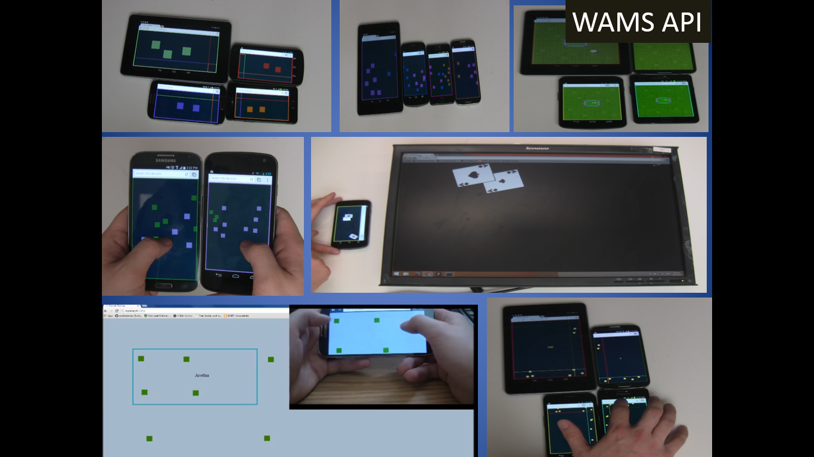
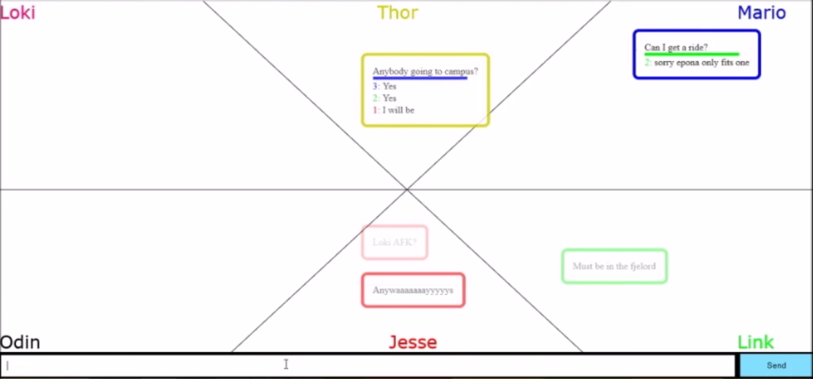
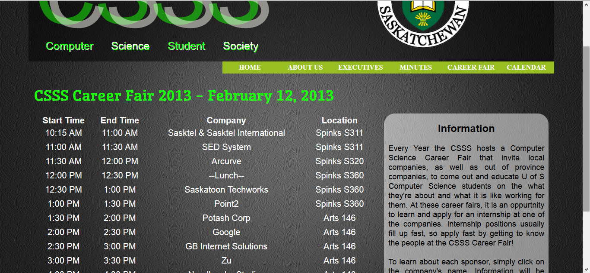
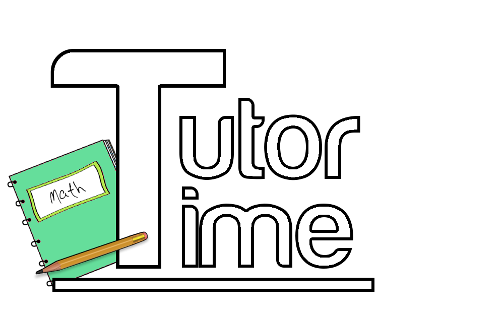

Royal Rumble

Royal Rumble is a 4 player hack'n'slash game in which you play as 4 knights fighting against waves of goblins and orcs. The game features fun sword and shield combat, with assisting torch and grappling mechanics. Built using Unity and C#. This project was developed by a team of 5 members for the "Game Mechanics" course (CMPT 306). Download and Play (Requires Xbox Controllers)
WAMS API
WAMS is an API for creating Workspace Applications across Multiple Surfaces. It has proven to greatly reduce the amount of code required to create multi-surface applications, and enables developers to write much more meaningful code. The API has been used to created applications such as drawing applications, image sharing, card table simulator and small party games. Built using Javascript and NodeJS. This is an ongoing project I am developing for Dr. Carl Gutwin in the HCI lab. Try out the current version
Hermes Messenger
Hermes Messenger is a chat application designed for multiple users. It was designed to improve on group awareness and to fix coherency issues that arise when multiple people are using a chat application. Built using HTML, CSS, Javascript, jQuery, and NodeJS. This project was developed by team of 5 members for the "Human Computer Interaction" course (CMPT 481).
CSSS Website
The CSSS website informs visitors of who the CSSS are and what they do as a group at the University of Saskatchewan. It is designed to be easily maintained by executive members of the CSSS without extensive knowledge of the backend code or website development. It has proven to be a great improvement over the existing CSSS website. Built using HTML, CSS, Javascript, jQuery, and PHP This project was developed by team of 3 members for the "Website Design/Development" course (CMPT 281). Check it out
TutorTime
TutorTime is a program which connects students in need to available tutors. Students can look for and request a help session based on the subject. The tutor then confirms or denies the request made by the student. TutorTime was built using Java, using HTML and CSS for some design aspects, and has a SQL database. This project was developed by a team of 5 members for the "Intermediate Software Engineering" course (CMPT 370).